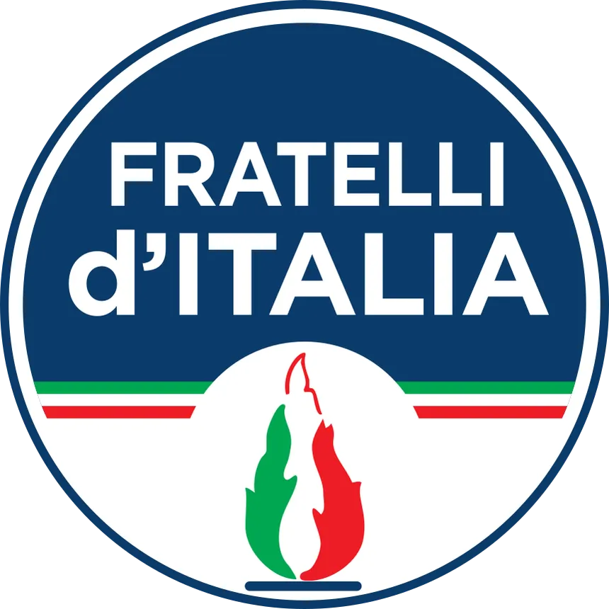
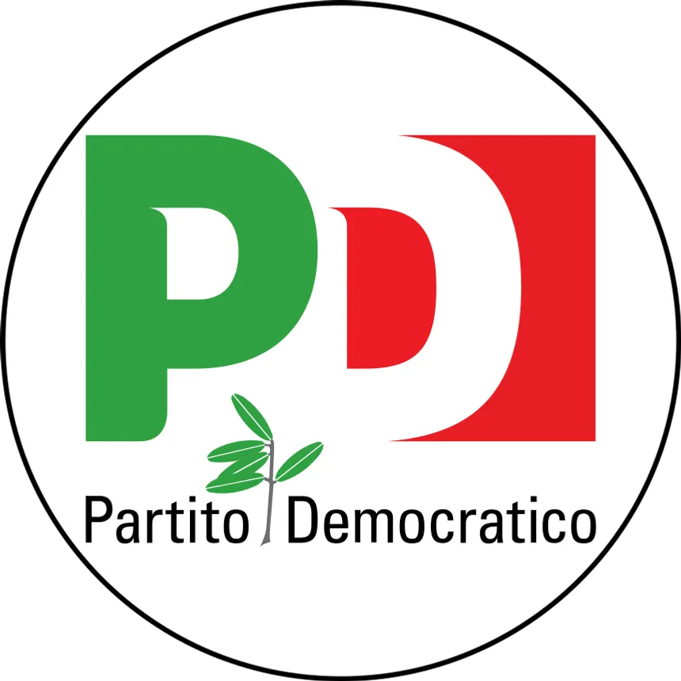
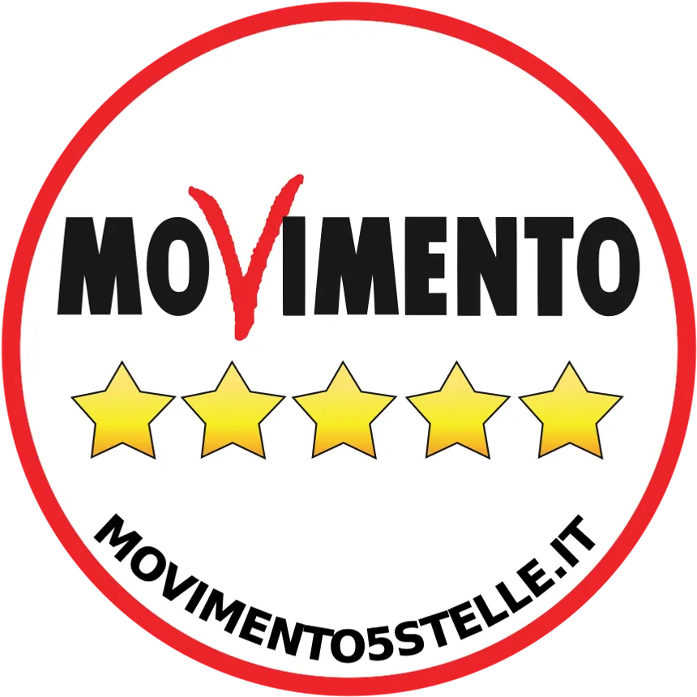
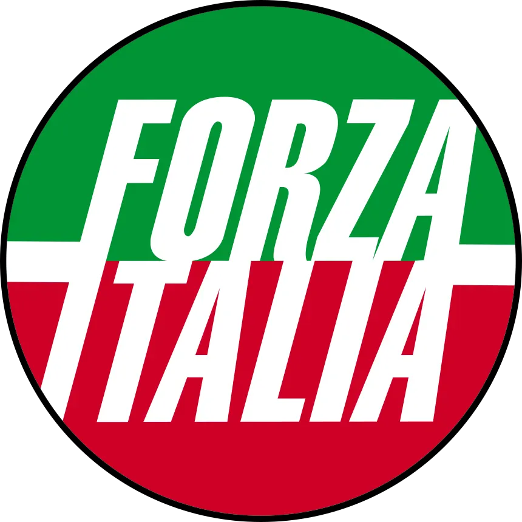
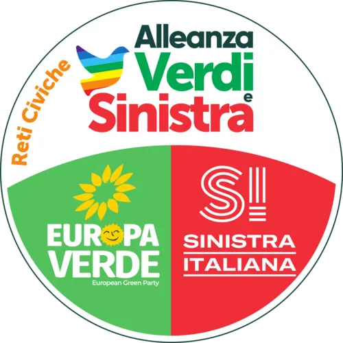
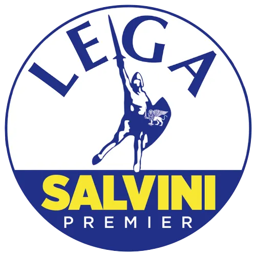
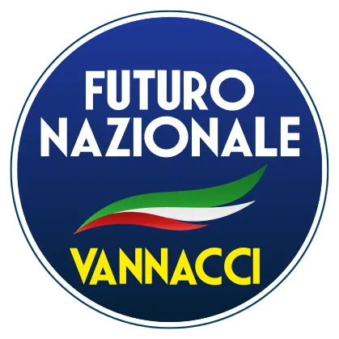

Storia, idee e posizioni dei sette principali partiti italiani.
Il partito di Giorgia Meloni, il primo partito italiano per preferenze al momento di scrittura che guida della coalizione di governo in carica dal 2022. Con radici nell'MSI (post-fascista), oggi si definisce conservatore e patriota.

Il principale partito di centrosinistra, guidato da Elly Schlein dal 2023. Nato nel 2007 dalla fusione di DS e Margherita, eredita la tradizione della sinistra cristiana e socialdemocratica.

Fondato da Beppe Grillo nel 2009, ora guidato da Giuseppe Conte, è nato presentandosi come un'alternativa alla dicotomia destra-sinistra della politica italiano.

Fondato da Silvio Berlusconi nel 1994, oggi guidato da Antonio Tajani. Caratterizzato da liberalismo moderato, atlantismo ed europeismo.

Coalizione elettorale tra Europa Verde e Sinistra Italiana. Ecologismo, diritti e pacifismo. Guidata da Angelo Bonelli e Nicola Fratoianni.

Il partito di Matteo Salvini. Nato come Lega Nord federalista negli anni '90, si è trasformato in partito nazionale sovranista.

Fondato da Roberto Vannacci il 3 febbraio 2026, dopo la sua uscita dalla Lega, di cui era stato eletto europarlamentare nel 2024 con oltre 500.000 preferenze. Destra sovranista e identitaria, critica all'UE e all'establishment.

Il partito liberal-democratico di Carlo Calenda. Riformismo, competenza, atlantismo. Scisso da Italia Viva nel 2022.
Il partito di Matteo Renzi, nato nel 2019 dopo la scissione dal PD. Liberalismo di mercato, riformismo, centrismo.